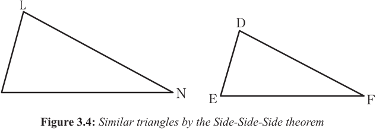

Side-Side-Side (SSS) similarity theorem
The SSS similarity theorem states that, two triangles are similar if three pairs of corresponding sides are proportional. Figure 3.4 describes the SSS theorem.

In Figure 3.4, it can be observed that, if the ratio of their sides are such that
= = ,\ LMN DEF
Therefore, , and .